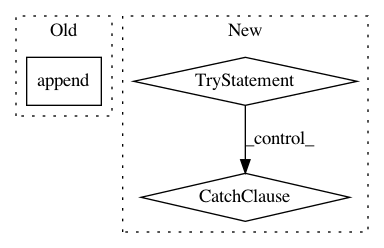

325fae8fbbc16b3c1ca40559bb2a9c783efaf440,libact/query_strategies/active_learning_by_learning.py,ActiveLearningByLearning,make_query,#ActiveLearningByLearning#,161
Before Change
)[0]
ask_id = self.unlabeled_entry_ids[ask_idx]
self.W.append(1./q[ask_idx])
self.queried_hist_.append(ask_id)
return self.queried_hist_[-1]
class Exp4P():
After Change
Except for the initial query, it returns the id of the data albl
wants to query.
dataset = self.dataset
try:
unlabeled_entry_ids, X_pool = zip(*dataset.get_unlabeled_entries())
except ValueError:
// might be no more unlabeled data left
return
while self.budget_used < self.T:
ask_idx = np.random.choice(
np.arange(len(self.unlabeled_invert_id_idx)), size=1, p=q
)[0]
In pattern: SUPERPATTERN
Frequency: 3
Non-data size: 3
Instances
Project Name: ntucllab/libact
Commit Name: 325fae8fbbc16b3c1ca40559bb2a9c783efaf440
Time: 2015-11-25
Author: yangarbiter@gmail.com
File Name: libact/query_strategies/active_learning_by_learning.py
Class Name: ActiveLearningByLearning
Method Name: make_query
Project Name: nilmtk/nilmtk
Commit Name: 8a5013ce5cef105bed8341bc043c97cd803cd233
Time: 2014-12-18
Author: jack-list@xlk.org.uk
File Name: nilmtk/metergroup.py
Class Name: MeterGroup
Method Name: _meter_generators
Project Name: dask/dask-image
Commit Name: 9982ea13b8562996047c96381e96fbc720973fee
Time: 2018-06-18
Author: jakirkham@gmail.com
File Name: docs/conf.py
Class Name:
Method Name: run_apidoc